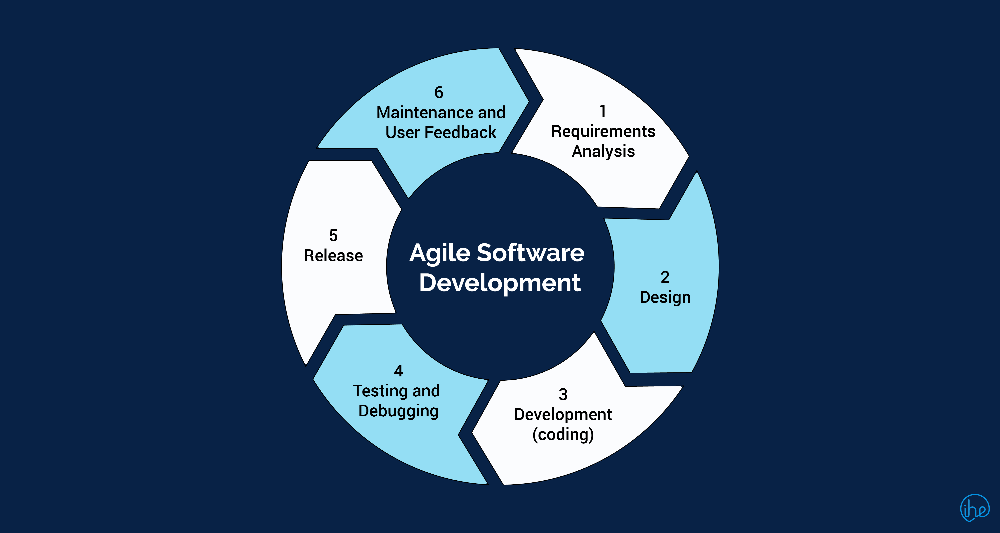

Välkommen till andra sidan gränsen, det svenska landet, ingen återvändo.
Systemutvecklings metodik
Systemutvecklings Metodik är ett samlings begrep över olika strategier processer som man använder i systemutveckling det inkluderar processer i planering, design, utveckling, testning och implementering av programvaran.

Skillnaden mellan de två olika Systemutvecklings metodikerna
När man pratar om Systemutvecklings Metodiker är det två viktigaste Strukturerade metoder och Agile metoder den stora skillnaden mellan dessa är att i strukturerade metoder måste man i förväg veta vart man ska och man jobbar med systemutvecklingen stegvis man blir först färdig med en sak före man går vidare med nästa. Medan man i Agila metoder kan vara mer fleksibel
Oversriften til tredje bildeboks
Tekst til det tredje bildet

Oversriften til fjerde bildeboks
Tekst til det fjerde bildet
Hovedside